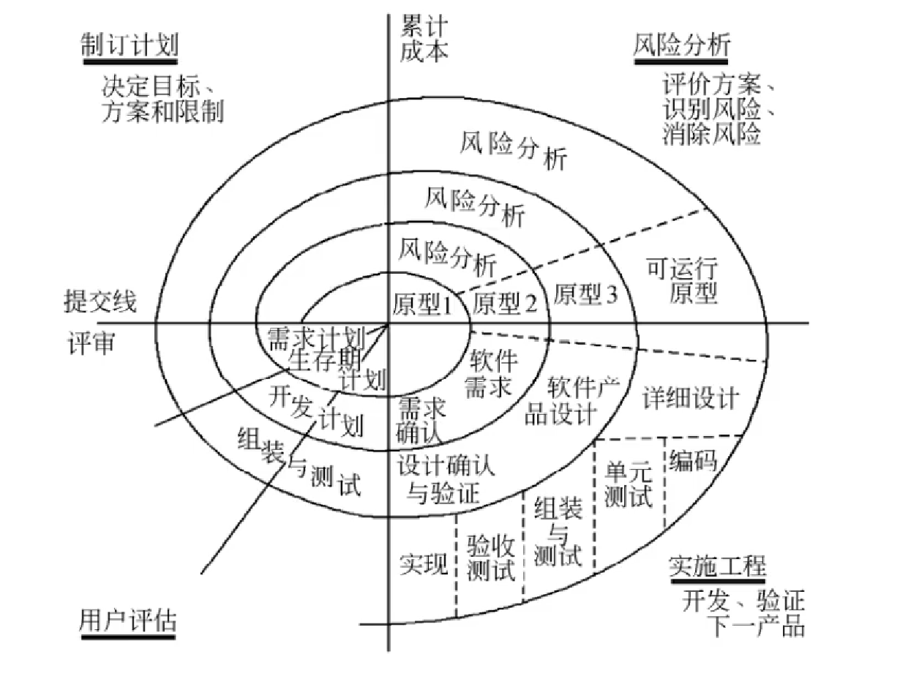

中级–软件设计师（知识点）
知识产权
著作权（版权）
- 人身权
- 发表权（期限：终身+50年）、署名权、修改权、保护作品完整权
- 财产权
专利地域性
各国主管机关依照本国法律授予的知识产权，只能在其本国领域内受法律保护（哪里申请，哪里保护）
计算机软件著作权
主体与客体
- 主体
- 计算机软件著作权的主体指享有著作权的人
- 根据规定：著作权法（《中华人民共和国著作权法》）、《计算机软件保护条例》
- 客体
- 计算机软件著作权的主体指著作权法保护的计算机著作权的范围（受保护的对象）
- 计算机程序：源程序和目标程序
- 计算机软件的文档：程序设计说明书、流程图和用户手册
- 根据规定：《著作权法》第三条、《计算机软件保护条例》第二条
- 计算机软件著作权的主体指著作权法保护的计算机著作权的范围（受保护的对象）
权利
- 人身权
- 发表权、开发者身份权（署名权）
- 财产权
保护期
计算机软件著作权的权利自软件开发完成之日起产生，保护期为50年。保护期满，除开发者身份权外，其他权利终止。
职务作品
职务软件作品指公民在单位任职期间为执行本单位工作任务所开发的计算机软件作品。（开发人员仅享有署名权）
若开发的软件不是执行本职工作的结果，其著作权不属单位享有。如果该雇员主要使用了单位的设备，著作权不能属于该雇员个人享有。
委托开发
接受他人委托开发的软件，其著作权的归属由委托者与受委托者签订书面合同约定；无书面合同或者书面合同未作明确约定的，其著作权由受托人享有。
商业秘密权
商业秘密：指不为公众所知悉的，能为权利人带来经济利益、具有实用性并经权利人采取保密措施的技术信息和经营信息。
专利权申请
- 专利申请原则
- 两个或者两个以上的人分别就同样的发明创造申请专利的，专利权授给最先申请人，同一时间则协商。
商标权
-
时间性
- 我国商标权的保护期限自核准注册之日起10年内有效，但可以根据其所有人的需要无限地延长权利期限，在期限届满前6个月内申请续展注册，每次续展注册的有效期为10年
-
商标注册
- 先注册先得，同一时间，先使用先得，未使用协商。
面向对象技术
类
一个类所包含的方法和数据描述一组对象的共同行为和属性。
类是在对象之上的抽像，对象是类的具体化，是类的实例。
- 类分为三种
- 实体类
- 其对象表示现实世界中真实的实体
- 接口类（边界类）
- 其为用户提供一种与系统合作交互的方式
- 控制类
- 其用来控制活动流，充当协调者
- 实体类
- 一般类与特殊类
- 一般类为特殊类的父类，特殊类为一般类的子类
对象
对象是基本的运行时的实体，它既包括数据（属性 | 状态），也包括作用与数据的操作（行为 | 方法 | 函数）。
一个对象通常由对象名、属性和方法 3 个部分组成。
消息
对象之间进行通信的一种构造叫作消息。
当一个消息发送给某个对象时，包含要求接收对象去执行某些活动的信息。接收到信息的对象经过解释，然后予以响应。这种通信机制称为消息传递。
方法重载
- 方法名相同，参数个数不同
- 方法名相同，参数类型不同
- 方法名相同，参数类型顺序不同
封装
封装是一种信息隐蔽技术，它的目的是使对象的使用者和生产者分离，使对象的定义和实现分开。
继承
继承是父类和子类之间共享数据和方法的机制。
一个父类可以有多个子类，这些子类都是父类的特例，父类描述类这些子类的公共属性和方法。一个子类可以继承它的父类（或祖先类）中的属性和方法，这些属性和操作在子类中不必定义，子类还可以定义自己的属性和方法。
单重继承：继承一个父类
多重继承：继承两个及以上的父类
多态
同类的不同的对象收到同一消息可以产生完全不同的结果，这一现象称为多态。
父类 对象名 = new 子类 编译看左边，运行看右边
多态的不同形式
- 多态
- 通用的
- 参数：泛型
- 包含：父类引用子类
- 特定的
- 过载：重载方法
- 强制：强制类型转换
- 通用的
静态、动态绑定
绑定是一个把过程调用和响应调用所需要执行的代码加以结合的过程
- 静态绑定：在编译时进行
- 动态绑定：在运行时进行
面向对象设计原则
- 单一责任原则
- 就一个类而言，应该仅有一个引起它变化的原因
- 开放-封闭原则
- 对扩展开放，对修改封闭
- 里氏替换原则
- 基类出现的地方，子类必定能出现
- 依赖倒置原则
- 依赖于抽象，而不依赖于细节（实现）
- 接口分离原则
- 依赖于抽象，而不依赖与具体
- 共同重用原则
- 重用包中的一个类，就要重用包中的所有类
- 共同封闭原则
- 一个变化若对一个包产生影响，则将对该包中的所有类产生影响，而对于其他的包不造成影响
面向对象
分析（OOA）
面向对象分析的目的是为了获得对应用问题的理解。理解的目的是确定系统的功能、性能的要求。
5 个活动
- 认定对象
- 定义问题域，将自然存在的 ‘名词’ 作为一个对象
- 组织对象
- 对象间的相互作用
- 基于对象的操作
- 定义对象的内部信息
设计（OOD）
面向对象设计是将 OOA 所创建的分析模型转化为设计模型，其目标是定义系统构造蓝图。
OOD 在复用 OOA 模型的基础上，包含与 OOA 对应如下五个活动：
- 识别类及对象
- 定义属性
- 定义服务
- 识别关系
- 识别包
测试
4 个层次
- 算法层
- 类层
- 模板层
- 系统层
补充
- 类的静态方法只能访问该类的静态数据成员
- 静态数据成员可以被该类的所有方法访问
- 该类的对象共享其静态数据成员的值
- 在面向对象技术中，对象具有清晰的边界、良好定义的行为、可扩展性的特性
UML
UML 统一建模语言，由 3 个要素构成，UML 的基本构造块、支配这些构造块如何放置在一起的规则、运用与整个语言的一些公共机制。
UML 的词汇表包含 3 种构造块：
- 事物
- 对模型中最具有代表性的成分的抽象
- 关系
- 把事物结合在一起
- 图
- 聚集了相关的事物
事物
4 种事物：
- 结构事物（静态部分）
- 类、接口、协作、用例、主动类、构件、制品、结点
- 行为事物（动态部分）
- 交互、状态机、活动
- 分组事物（组织部分）
- 包
- 注释事物（解释部分）
- 注解
关系
4 种关系：依赖、关联、泛化、实现
依赖关系
依赖是两个事物之间的语义关系，其中一个事物（独立事物）发生变化会影响另一个事物（依赖事物）的语义。

关联关系
关联是一种结构关系，它描述了一组链，链是对象之间的连接。聚集是一种特殊类型的关联，它描述了整体和部分间的结构关系。
在关联上可以标注重复度（多重度）和角色。

-
聚集：部分和整体的生命周期不一致，整体消失了，部分仍然存在，部分可以脱离整体存在。
-
组合：部分和整体的生命周期一致，整体消失了，部分也消失了，部分不可以脱离整体存在。
关联多重度
多重度是指一个类的实例能够与另一个类的多少个实例相关联
泛化关系
泛化是一种特殊/一般关系，特殊元素（子类）的对象可替代一般元素（父类）的对象。
实现关系
实现是类元之间的语义关系，其中一个类元指定了由另一个类元保证执行的契约。
图
静态建模：类图、对象图、用例图
动态建模：序列图、通信图、状态图、活动图
物理建模：构件图、部署图
交互图：序列图、通信图
类图
类图展现了一组对象、接口、协作和它们之间的关系。 类图一般包括类、接口、协作、依赖、泛化、关联。

3 种方式使用类图
- 对系统的词汇建模
- 对简单的协作建模
- 对逻辑数据库模式建模
对象图
对象图展示了某一时刻一组对象以及它们之间的关系。对象图一般包括对象、链。

用例图
用例图展现了一组用例、参与者以及它们之间的关系。用例图一般包括用例、参与者、用例之间的扩展关系（«extend>>）和包含关系（«include>>）、参与者和用例之间的关联关系、用例与用例以及参与者与参与者之间的泛化关系。
参与者：表示人、硬件或其他系统可以扮演的角色
用例：一个类，代表一类功能而不是使用该功能的某一具体实例

- 包含关系（用例&用例）
- 当某一用例被执行时，其箭头指向的用例（被包含用例）也会被执行。
- 扩展关系（用例&用例）
- 一个用例执行的时候，可能会发生一些特殊的情况或可选的情况，这种情况就是这个用例的扩展用例。
- 泛化关系（用例&用例 || 参与者&参与者）
序列图（顺序图）
序列图是场景的图形化表示，描述了以时间顺序组织的对象之间的交互活动。
- 序列图有两个不同于通信图的特征：
- 序列图有对象生命线，表示一个对象在一段时间内存在
- 序列图有控制焦点（生命线上的矩形），表示一个对象执行一个动作所经历的时间段

通信图（协作图）
通信图强调收发消息的对象的结构组织，展示对象之间的消息流及其顺序。
- 通信图有两个不同于序列图的特性
- 通信图有路径
- 通信图有顺序号

序列图和通信图是同构的，它们之间可以相互转换。
状态图
状态图展现了一个状态机，它由状态、转换、事件、活动组成，强调对象（单个）行为的事件顺序，通常对反应型对象建模。
状态图用于描述一个对象在多个用例中的行为，用于某些具有多个状态的对象而不是系统中大多数或全部对象。
- 状态
-
- 活动
- 活动表的语法格式：
事件名（参数表）/动作表达式 -

- 活动表的语法格式：
- 事件
- 事件表达式语法格式：
事件说明[监护条件]/动作表达式
- 事件表达式语法格式：
- 转换（迁移）
- 转换可以包含事件触发器、监护条件、状态（两个）

状态图可以没有终止状态。
转换包括两个状态（源状态，目标状态）。
事件触发转移（迁移）。
活动（动作）可以在状态内执行，也可以在状态转换（迁移）时执行。

组合状态也称超状态，嵌套状态也称子状态
活动图
活动图是一种特殊的状态图，它展现了在系统内从一个活动到另一个活动的流程。

构件图
构件图展现了一组构件之间的组织和依赖。通常把构件映射为一个或多个类、接口或协作。
部署图
部署图是用来对面向对象系统的物理方面建模的方法，展现了系统的软件和硬件之间的关系，在实施阶段使用。

软件工程
软件过程
能力成熟度模型（CMM）
CMM 将软件过程改进分为以下 5 个成熟度级别：
- 初始级
- 软件过程的特定是杂乱无章，有时甚至混乱，几乎没有明确定义的步骤，项目的成功完全依赖个人努力和英雄式核心人物的作用
- 可重复级
- 建立了基本的项目管理过程和实践来跟踪项目费用、进度和功能特性，有必要的过程准则来重复以前在同类项目中的成功
- 已定义级
- 软件过程文档化、标准化，并综合成整个软件开发组织的标准软件过程。所有项目都采用根据实际情况修改后得到的标准软件过程来开发和维护软件。
- 已管理级
- 制定了软件过程和产品质量的详细度量标准。软件过程的产品质量都被开发组织的成员所理解和控制。
- 优化级
- 加强了定量分析，通过来自过程质量反馈和来自新观念、新技术的反馈使过程能不断持续地改进。
能力成熟度模型集成（CMMI）
CMMI提供了两种表示方法：阶段式模型和连续式模型
1）阶段式模型
- 初始的：过程不可预测且缺乏控制
- 已管理的：过程为项目服务
- 已定义的：过程为组织服务
- 定量管理的：过程已度量和控制
- 优化的：集中于过程改进
2）连续式模型
- CL0（未完成的）
- 过程域未执行或未得到 CL1 中定义的所有目标。
- CL1（已执行的）
- 其共性目标是过程将可标识的输入工作产品转换成可标识的输出工作产品，以实现支持过程域的特定目标。
- CL2（已管理的）
- 其共性目标集中于已管理的过程的制度化。根据组织级政策规定过程的运行将使用哪个过程，项目遵循已文档化的计划和过程描述，所有正在工作的人都有权使用足够的资源，所有工作任务和工作产品都被监控、控制和评审。
- CL3（已定义级的）
- 其共性目标集中于已定义的过程的制度化。过程是按照组织的剪裁指南从组织的标准过程集中剪裁得到的，还必须收集过程资产和过程的度量，并用于将来对过程的改进。
- CL4（定量管理的）
- 其共性目标集中于可定量管理的过程的制度化。使用测量和质量保证来控制和改进过程域，建立和使用关于质量和过程执行的定量目标作为管理准则。
- CL5（优化的）
- 使用量化（统计学）手段改变和优化过程域，以满足客户要求的改变和持续改进计划中的过程域的功效。
软件过程模型
软件过程模型也称为软件开发模型，它是软件开发全部过程、活动和任务的结构框架。
瀑布模型
只适用于需求明确或者二次开发（需求稳定）。
- 优点
- 容易理解，管理成本低
- 强调开发的阶段性早期计划及需求调查和产品测试
- 缺点
- 客户必须能够完整、正确、清晰的表达他们的需要
- 难以评估进度状态
- 接近项目结束时，出现大量的集成和测试工作
V模型
特点是增加了多轮测试。
增量模型
优先级最高的服务最先交付，但由于并不是从系统整体角度规划各个模块，因此不利于模块划分。
- 优点
- 瀑布模型的优点
- 第一个可交付版本所需成本和时间很少
- 开发承担的风险不大
- 可减少用户需求的变更
- 运行增量投资
- 缺点
- 初始增量可能会造成后来增量的不稳定
- 需求不稳定，可能导致一些增量需重新开发
- 管理发生的成本、进度和配置的复杂性可能会超出组织的能力
演化模型
演化模型是迭代的过程模型，使得软件开发人员能够逐步开发出更完整的软件版本。演化模型特别适用于对软件需求缺乏准确认识的情况。
原型模型
原型方法比较适合于用户需求不清、需求经常变化的情况。当系统规模不是很大也不太复杂时，采用该方法比较好。
螺旋模型
螺旋模型将瀑布模型和演化模型结合起来，加入了风险分析。适用于庞大、复杂且具有高风险的系统。
喷泉模型
喷泉模型是一种以用户需求为动力，以对象作为驱动的模型，适合于面向对象的开发方法。
喷泉模型克服了瀑布模型不支持软件重用和多项开发活动集成的局限性
- 优点
- 各个阶段没有明显界线，开发人员可以同步进行，提高软件项目的开发效率，节省开发时间
- 缺点
- 由于各个开发阶段是重叠的，在开发过程中需要大量的开发人员，不利于项目的管理
- 这种模型要求严格管理文档，使得审核难度加大
统一过程模型（UP）
统一过程定义了 4 个技术阶段及其制品
- 起始阶段：生命周期目标
- 专注于项目的初创活动
- 精化阶段：生命周期架构
- 理解了最初的领域范围之后进行需求分析和架构演进
- 构件阶段：初始运作功能
- 关注系统的构建，产生实现模型
- 移交阶段：产品发布
- 关注于软件提交方面的工作，产生软件增量
敏捷方法
极限编程（XP）
极限编程由价值观、原则、实践、行为 4 个部分组成
- 4 大价值观
- 沟通、简单性、反馈、勇气
- 5 个原则
- 快速反馈、简单性假设、逐步修改、提倡更改、优质工作
- 12 个最佳实践
- 计划游戏（快速制定计划、随着细节不断变化而完善）、小型发布、隐喻（找到合适的比喻传达信息）、简单设计、测试先行、重构、结对编程、集体代码所有制、持续集成、每周工作 40 小时、现场客户、编码标准
水晶法
水晶法认为每一个不同的项目都需要一套不同的策略、约定和方法论
并列争求法
并列争求法使用迭代的方法，其中，把每 30 天一次的迭代称为一个“冲刺”
自适应软件开发（ASD）
ASD 有 6 个基本的原则
敏捷统一过程（AUP）
敏捷统一过程采用“在大型上连续”以及“在小型上迭代”的原理来构建软件系统。
每个 AUP 迭代执行以下活动：
- 建模
- 实现
- 测试
- 部署
- 配置及项目管理
- 环境管理
软件需求
12 种需求
- 功能需求
- 考虑系统要做什么，何时做，在何时以及如何修改或升级
- 性能需求
- 考虑软件开发的技术性指标
- 用户或人的因素
- 考虑用户的类型
- 环境需求
- 考虑未来软件应用的环境，包括硬件和软件
- 界面需求
- 考虑来自其他系统的输入，到其他系统的输出，对数据格式的特殊规定，对数据存储介质的规定
- 文档需求
- 考虑需要哪些文档，文档针对哪些读者
- 数据需求
- 考虑输入、输出数据的格式，接收、发送数据的频率，数据的准确性和精度、维护所需的人力、支撑软件、开发设备等
- 资源使用需求
- 考虑软件运行时所需要的数据、其他软件、内存空间等资源；软件开发、维护所需的人力、支撑软件、开发设备等
- 安全保密要求
- 考虑是否需要对访问系统或系统信息加以控制，隔离用户数据的方法，用户程序如何与其他程序和操作系统隔离以及系统备份的要求
- 可靠性要求
- 考虑系统的可靠性要求，系统是否必须检测和隔离错误；出错后，重启系统允许的时间等
- 软件成本消耗与开发进度需求
- 考虑是否有规定的时间表，软/硬件投资有无限制等
- 其他非功能性要求
系统设计
概要设计
- 设计软件系统总体结构
- 将一个复杂的系统按功能划分成模块
- 确定每个模块的功能
- 确定模块之间的调用关系
- 确定模块之间的接口，即模块之间传递的信息
- 评价模块结构的质量
- 数据结构及数据库设计
- 编写概要设计文档
- 评审
详细设计
- 对每个模块进行详细的算法设计，用某种图形、表格和语言等工具将每个模块处理过程的详细算法描述出来
- 对模块内的数据结构进行设计
- 对数据库进行物理设计
- 其他设计
- 编写详细设计说明书
- 评审
系统测试
系统测试是为了发现错误而执行程序的过程，成功的测试是发现了至今尚未发现的错误的测试
测试的目的就是希望能以最少的人力和时间发现潜在的各种错误和缺陷
基本原则：
- 应尽早并不断进行测试
- 测试工作应该避免由原开发软件的人或小组承担，一方面开发人员往往否认自己的工作，另一方面具有局限性
- 在设计测试方案时，不仅要确定输入数据，而且要根据系统功能确定预期输出结果
- 在设计测试用例时，不仅要设计有效合理的输入条件，也要包含不合理、失效的输入条件
- 在测试程序时，不仅要检查程序是否做了该做的事，还要检验是否做了不该做的事
- 严格按照测试计划来进行，避免测试的随意性
- 妥善保存测试计划、测试用例，作为软件文档的组成部分，为维护提供方便
- 测试例子都是精心设计出来的，可以为重新测试或追加测试提供方便
- 系统测试阶段的测试目标来自于需求分析阶段
单元测试
单元测试也称为模块测试，在模块编写完成且无编译错误后就可以进行
单元测试的测试内容
主要检查模块的以下 5 个特征：
- 模块接口
- 局部数据结构
- 重要的执行路径
- 出错处理
- 边界条件
单元测试过程
由于模块不是独立运行的程序，各模块之间存在调用于被调用的关系。在对每个模块进行测试时，需要开发两种模块。
- 驱动模块
- 相当于一个主程序，接收测试例子的数据，将这些数据送到测试模块，输出测试结果
- 桩模块
- 桩模块用来代替测试模块中所调用的子模块，其内部可进行少量的数据处理，目的是为了检验入口，输出调用和返回信息
集成测试
集成测试就是把模块按系统设计说明书的要求组合起来进行测试
集成测试方法：
- 自顶向下集成测试（不需要驱动模块，需要桩模块）
- 自底向上集成测试（不需要桩模块，需要驱动模块）
- 低层构件集成为簇
- 回归测试
- 冒烟测试（知道有就行）
测试方法
软件测试方法分为静态测试和动态测试
- 静态测试
- 静态测试是指被测程序不在机器上运行，而是采用人工检测和计算机辅助静态分析的手段对程序进行检测
- 动态测试
- 动态测试是指通过运行程序发现错误。在对软件产品进行动态测试时可以采用黑盒测试法和白盒测试法
黑盒测试
黑盒测试也称为功能测试，在完全不考虑软件内部结构和特性的情况下，测试软件的外部特性
常用黑盒测试技术：
- 等价类划分
- 将程序的输入域划分为若干等价类，然后从每个等价类中选取一个代表性数据作为测试用例（等价类分为有效等价类和无效等价类）
- 边界值分析
- 边界值划分选择等价类边界的测试用例，既注重于输入条件边界，又适用于输出域测试用例
- 错误推测
- 错误推测是基于经验和直觉推测程序中所有可能存在的各种错误，从而有针对性地设计测试用例的方法
- 因果图
- 因果图法是从自然语言描述的程序规格说明中找出因（输入条件）和果（输出或程序状态的改变），通过因果图转换为判定表
白盒测试
白盒测试也称为结构测试，根据程序的内部结构和逻辑设计测试用例，对程序的路径和过程进行测试，检查是否满足设计的需要。
白盒测试常用的技术是逻辑覆盖、 循环覆盖和基本路径测试。
- 逻辑覆盖
- 逻辑覆盖考察用测试数据运行被测程序时对程序逻辑的覆盖程度，主要的逻辑覆盖有：
- 语句覆盖：使被测试程序中的每条语句至少执行一次
- 判定覆盖（分支覆盖）：使得被测程序中的每个判定表达式至少获得一次 “真 ” 值和 “假 ” 值
- 条件覆盖：使得每一判定语句中每个逻辑条件的各种可能的值至少满足一次
- 判定／条件覆盖：使得判定中每个条件的所有可能取值（真／假）至少出现一次， 并使每个判定本身的判定结果（真／假）也至少出现一次
- 条件组合覆盖：使得每个判定中条件的各种可能值的组合都至少出现一次
- 路径覆盖：指覆盖被测试程序中所有可能的路径
- 逻辑覆盖考察用测试数据运行被测程序时对程序逻辑的覆盖程度，主要的逻辑覆盖有：
- 循环覆盖
- 执行足够的测试用例， 使得循环中的每个条件都得到验证
- 基本路径测试
- 在程序控制流图的基础上通过分析控制流图的环路复杂性， 导出基本可执行路径集合， 从而设计测试用例
McCabe度量法
V(G) = m -n + 2 （V 为复杂度，m 为弧数，n 为结点数）
或 封闭圈数 + 1
软件维护
系统可维护性评价指标
系统的可维护性可以定义为维护人员理解、 改正、 改动和改进这个软件的难易程度。
系统维护主要包括硬件维护、软件维护和数据维护。
- 系统可维护性的评价指标
- 可理解性
- 可修改性
- 可测试性
- 维护与软件文档
- 文档是软件可维护性的决定因素。
- 可维护性是所有软件都应具有的基本特点， 必须在开发阶段保证软件具有可维护的特点。在软件工程的每一个阶段都应考虑并提高软件的可维护性
软件文档
编写高质量文档可以提高软件开发的质量。
文档也是软件产品的一部分，没有文档的软件就不能称之为软件。
软件文档的编制在软件开发工作中占有突出的地位和相当大的工作量。
高质量文档对于软件产品的效益有着重要的意义
总之，软件文档只有好处
软件维护内容
软件维护主要是指根据需求变化或硬件环境的变化对应用程序进行部分或全部修改。修改时应充分利用源程序， 修改后要填写程序修改登记表，并在程序变更通知书上写明新旧程序的不同之处。
软件维护的内容：
- 正确性维护
- 指改正在系统开发阶段已发生而系统测试阶段尚未发现的错误。
- 适应性维护
- 指使应用软件适应信息技术变化和管理需求变化而进行的修改。
- 完善性维护
- 这是为扩充功能和改善性能而进行的修改， 主要是指对已有的软件系统增加一些在系统分析和设计阶段中没有规定的功能与性能特征。
- 预防性维护
- 为了改进应用软件的可靠性和可维护性， 为了适应未来的软／硬件环境的变化 ， 应主动增加预防性的新的功能， 以使应用系统适应各类变化而不被淘汰。
软件可靠性、可用性、可维护性指标
可靠性：指一个系统对于给定的时间间隔内、在给定条件下无失效运作的概率。可以用 MTTF / (1 + MTTF) 度量，其中 MTTF 为无故障时间。
可用性：在给定的时间点上，一个系统能够按照规格说明正确运作的概率。可以用 MTBF / (1 + MTBF) 来度量，其中 MTBF 为平均失效间隔时间。
可维护性：在给定的使用条件下，在规定的时间间隔内，使用规定的过程和资源完成维护活动的概率。可以用 1 / (1 + MTTR) 来度量，其中 MTTR 为平均修复时间。
软件项目估算
COCOMO估算模型
- 基本COCOMO模型
- 本COCOMO模型是一个静态单变量模型，用于对整个软件系统 进行估算。
- 中级COCOMO模型
- 中级COCOMO模型是一个静态多变量模型，它将软件系统模型分为系统和 部件两个层次 。
- 详细COCOMO模型
- 它将软件系统模型分为系统、子系统和模块3个层次，
COCOMOII模型
- 应用组装模型
- 早期设计阶段模型
- 体系结构阶段模型
在模型层次结构中有3种不同的规模估算选择： 对象点、 功能点和代码行。 应用组装模型使用的是对象点；早期设计阶段模型使用的是功能点， 功能点可以转换为代码行。
Gantt图
Gantt图能清晰地描述每个任务从何时开始，到何时结束，任务的进展情况以及各个任务之间的并行性。但是它不能清晰地反映出各任务之间的依赖关系，难以确定整个项目的关键所在，也不能反映计划中有潜力的部分。
PERT图
关键路径： 从开始到结束的所有路径中，所花时间最长的一条。
在关键路径上的任务的松弛时间为0
软件配置管理
主要目标：
变更标识、变更控制、版本控制、确保变更正确的实现、变更报告、
主要内容：
版本管理、配置支持、变更支持、过程支持、团队支持、变化报告、审计支持。
软件配置标识、变更管理、版本控制、系统建立、配置审核、配置状态报告
配置数据库可以分为以下 3 类：开发库、受控库、产品库
风险管理
软件风险包含两个特性： 不确定性和损失。不确定性是指风险可能发生也可能不发生；损失是指如果风险发生， 就会产生恶性后果。
不同类型的风险：
- 项目风险
- 技术风险
- 商业风险
风险识别
风险识别试图系统化地指出对项目计划（估算、 进度、 资源分配等）的威胁。
识别风险的一种方法是建立风险条目检查表。
风险预测
风险预测又称风险估计， 它试图从两个方面评估一个风险： 风险发生的可能性或概率； 如果风险发生了所产生的后果。
整体的风险显露度可由下 面的关系确定：
RE＝ PXC 其中 ， P是风险发生的概率， C是风险发生时带来的项目成本。
风险评估
种对风险评估很有用的技术就是定义风险参照水准。 对于大多数软件项目来说， 成本、进度和性能就是 3 种典型的风险参照水准。
风险控制
风险控制的目的是辅助项目组建立处理风险的策略。一个有效的策略必须考虑以下 3 个问题。
- 风险避免
- 应对风险的最好办法是主动地避免风险， 即在风险发生前分析引起风险的原因， 然后采取措施， 以避免风险的发生。
- 风险监控
- 项目管理者应监控某些因素， 这些因素可以提供风险是否正在变高或变低的指示。
- RMMM 计划
- RMMM计划将所有风险分析工作文档化， 并由项目管理者作为整个项目计划中的一部分来使用。
ISO/IEC 9126 软件质量模型
ISO/IEC 9126 软件质量模型由 3 个层次组成： 第一层是质量特性， 第二层是质量子特性，第三层是度量指标。
其中， 各质量特性和质量子特性的含义如下：
- 功能性
- 适应性。 与对规定任务能否提供一组功能以及这组功能是否适合有关的软件属性。
- 准确性。 与能够得到正确或相符的结果或效果有关的软件属性。
- 互用性。 与其他指定系统进行交互操作的能力相关的软件属性。
- 依从性。 使软件服从有关的标准、 约定、 法规及类似规定的软件属性。
- 安全性。 与避免对程序及数据的非授权故意或意外访问的能力有关的软件属性。
- 可靠性
- 成熟性。 与由软件故障引起失效的频度有关的软件属性。
- 容错性。 与在软件错误或违反指定接口的情况下维持指定的性能水平的能力有关的软件属性。
- 易恢复性。 与在故障发生后， 重新建立其性能水平并恢复直接受影响数据的能力， 以及为达到此目的所需的时间和努力有关的软件属性。
- 易使用性
- 易理解性。 与用户为理解逻辑概念及其应用所付出的劳动有关的软件属性。
- 易学性。 与用户为学习其应用（例如操作控制、 输入、 输出） 所付出的努力相关的软件属性。
- 易操作性。与用户为进行操作和操作控制所付出的努力有关的软件属性。
- 效率
- 时间特性。 与响应和处理时间以及软件执行其功能时的吞吐量有关的软件属性。
- 资源特性。 与软件执行其功能时， 所使用的资源量以及使用资源的持续时间有关的软件属性。
- 可维护性
- 易分析性。 与为诊断缺陷或失效原因， 或为判定待修改的部分所需努力有关的软件属性。
- 易改变性。 与进行修改、 排错或适应环境变换所需努力有关的软件属性。
- 稳定性。 与修改造成未预料效果的风险有关的软件属性。
- 易测试性。 为确认经修改软件所需努力有关的软件属性。
- 可移植性
- 适应性。 与软件转移到不同环境时的处理或手段有关的软件属性。
- 易安装性。 与在指定环境下安装软件所需努力有关的软件属性。
- 一致性。 使软件服从与可移植性有关的标准或约定的软件属性。
- 易替换性。 与一软件在该软件环境中用来替代指定的其他软件的可能和努力有关的软件属性。
Mc Call软件质量模型
Mc Call也给出了一个三层模型框架， 第一层是质量特性， 第二层是评价准则，第三层是度量指标。
软件评审
通常， 把 “质量” 理解为 “用户满意程度“。为了使得用户满意， 有以下两个必要条件：
-
设计的规格说明书符合用户的要求， 这称为设计质量。
-
程序按照设计规格说明所规定的情况正确执行 ， 这称为程序质量。
-
设计质量的评审内容
- 设计质量评审的对象是在需求分析阶段产生的软件需求规格说明、 数据需求规格说明， 以及在软件概要设计阶段产生的软件概要设计说明书等。 通常从以下几个方面进行评审。
- 评价软件的规格说明是否合乎用户的要求
- 评审可靠性
- 评审保密措施实现情况
- 评审操作特性实施情况
- 评审性能实现情况
- 评审软件是否具有可修改性、 可扩充性 、 可互换性和可移植性。
- 评审软件是否具有可测试性。
- 评审软件是否具有复用性。
- 设计质量评审的对象是在需求分析阶段产生的软件需求规格说明、 数据需求规格说明， 以及在软件概要设计阶段产生的软件概要设计说明书等。 通常从以下几个方面进行评审。
-
程序质量的评审内容
- 程序质量评审通常是从开发者的角度进行评审， 与开发技术直接相关。 它是着眼于软件本身的结构、 与运行环境的接口以及变更带来的影响而进行的评审活动。软件的结构如下：
- 功能结构
- 功能的通用性
- 模块的层次
- 模块结构
- 处理过程的结构
- 程序质量评审通常是从开发者的角度进行评审， 与开发技术直接相关。 它是着眼于软件本身的结构、 与运行环境的接口以及变更带来的影响而进行的评审活动。软件的结构如下：
-
与运行环境的接口
-
运行环境包括硬件、 其他软件和用户， 主要的检查项目如下：
- 与硬件的接口
- 与用户的接口
软件容错技术
容错软件的定义：
- 在一定程度上对自身错误的作用（软件错误）具有屏蔽能力
- 在一定程度上能从错误状态自动恢复到正常状态
- 在因错误发生错误时仍然能在一定程度上完成预期的功能
- 在一定程度上具有容错能力
容错的一般方法：
实现容错的主要手段是冗余。冗余技术分为 4 类：
- 结构冗余
- 按其工作方法可以分为静态、 动态和混合冗余3种。
- 信息冗余
- 时间冗余
- 冗余附加技术
- 在屏蔽硬件错误的容错技术中， 冗余附加技术包括：
- 关键程序和数据的冗余存储及调用。
- 检测、 表决、 切换、 重构、 纠错和复算的实现。
- 在屏蔽软件错误的容错系统中， 冗余附加技术的构成包括：
- 冗余备份程序的存储及调用。
- 实现错误检测和错误恢复的程序。
- 实现容错软件所需的固化程序。
- 在屏蔽硬件错误的容错技术中， 冗余附加技术包括：
软件工具
软件开发工具通常有需求分析工具 、 设计工具 、 编码与排错工具、 测试工具等。
软件维护工具主要有版本控制工具、 文档分析工具、 开发信息库工具、 逆向工程工具和再工程工具。